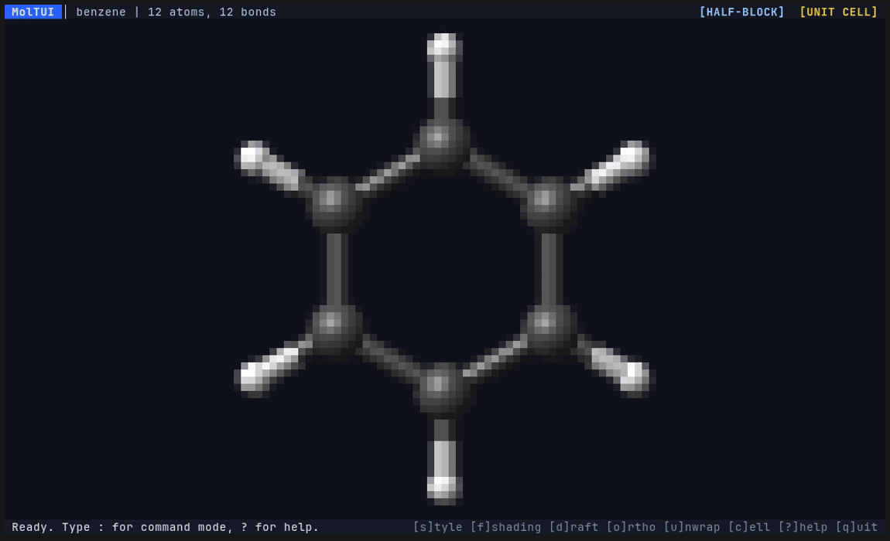
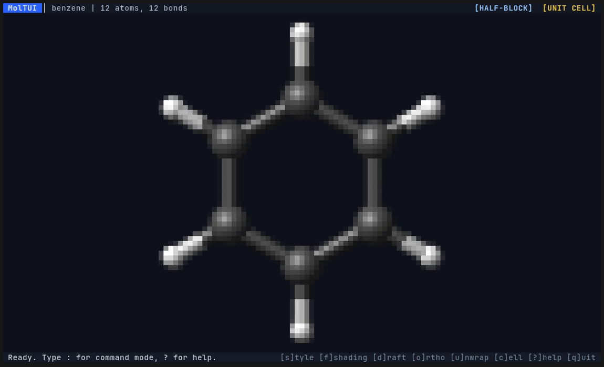
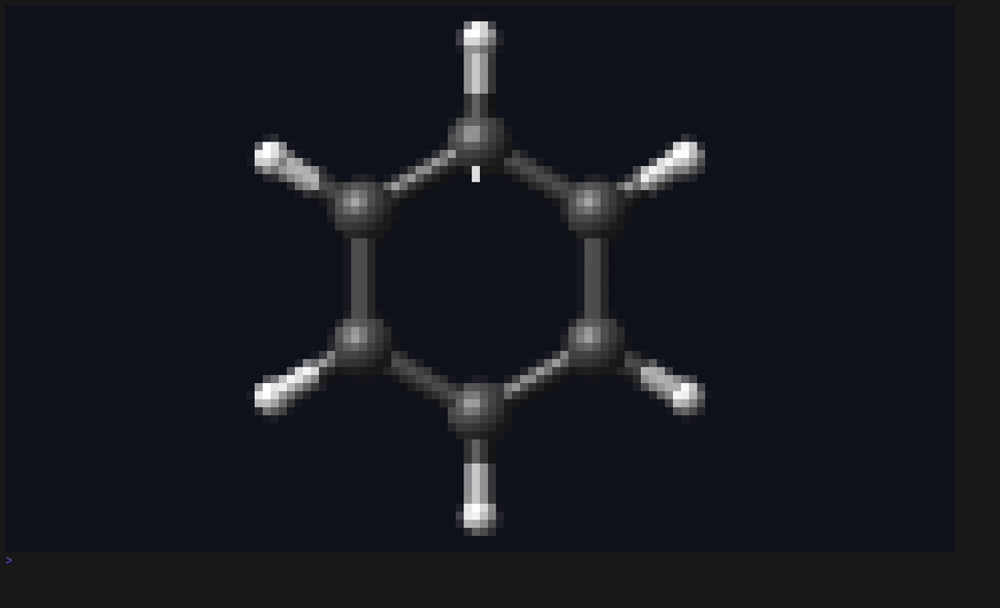
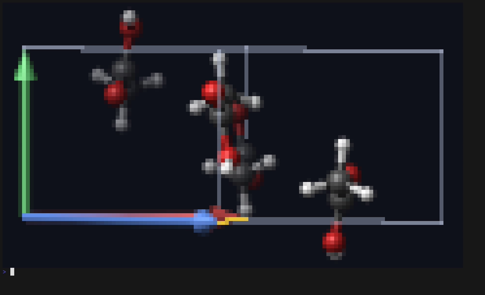
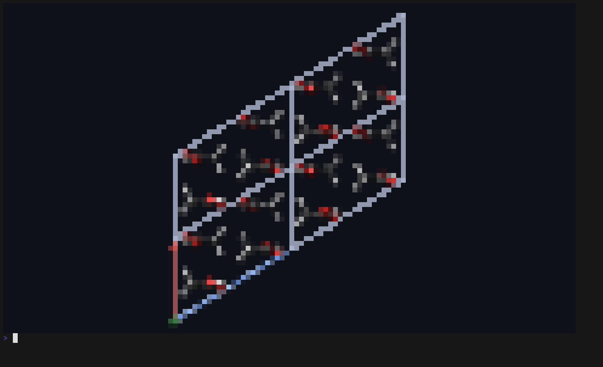
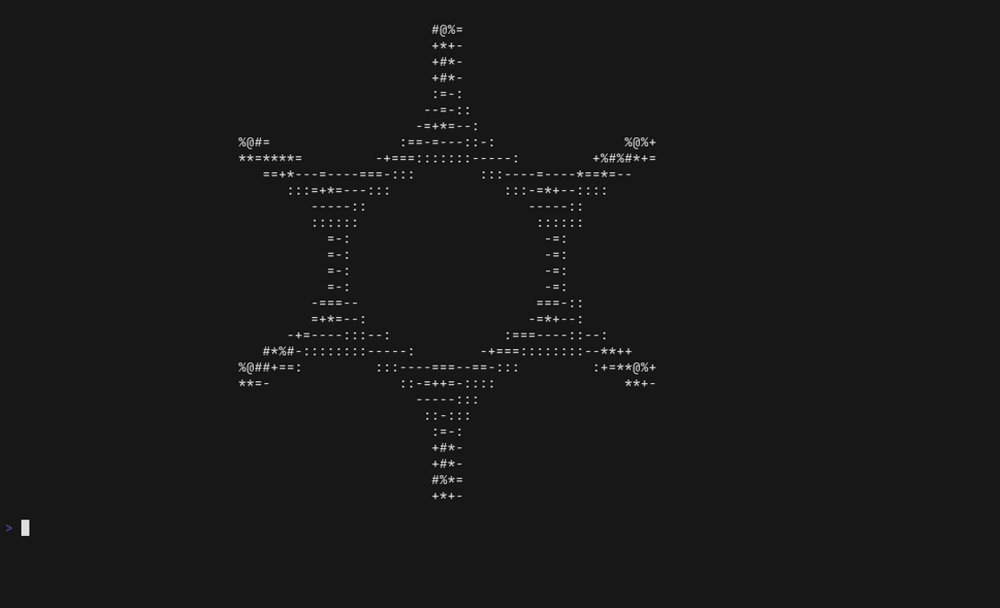

Kitty, Half-Blocks & ASCII
Auto-detects Kitty Graphics in Kitty, Ghostty, and WezTerm with synchronized updates; falls back cleanly to TrueColor ▀ half-blocks or monochrome ASCII.
MolTUI is a native C++20 terminal visualizer for molecular trajectories and periodic crystals.
Inspired by chmpy.tui, it combines Gemmi symmetry expansion, periodic boundary unwrapping,
a custom ray-intersected 3D rasterizer, and interactive geometry measurements.

Download a prebuilt binary archive from GitHub Releases or compile from source.
Download the self-contained Linux x86_64 release archive from GitHub Releases and install moltui onto your PATH:
curl -fsSL https://github.com/Parzival1918/moltui/releases/download/v0.1.0/moltui-v0.1.0-linux-x86_64.tar.gz | tar -xz sudo install -m 755 moltui-v0.1.0-linux-x86_64/bin/moltui /usr/local/bin/moltui moltui --version
Download the self-contained Linux aarch64 release archive from GitHub Releases:
curl -fsSL https://github.com/Parzival1918/moltui/releases/download/v0.1.0/moltui-v0.1.0-linux-aarch64.tar.gz | tar -xz sudo install -m 755 moltui-v0.1.0-linux-aarch64/bin/moltui /usr/local/bin/moltui moltui --version
Download the self-contained macOS Apple Silicon (arm64) release archive from GitHub Releases:
curl -fsSL https://github.com/Parzival1918/moltui/releases/download/v0.1.0/moltui-v0.1.0-macos-arm64.tar.gz | tar -xz sudo install -m 755 moltui-v0.1.0-macos-arm64/bin/moltui /usr/local/bin/moltui moltui --version
Download the self-contained macOS Intel (x86_64) release archive from GitHub Releases:
curl -fsSL https://github.com/Parzival1918/moltui/releases/download/v0.1.0/moltui-v0.1.0-macos-x86_64.tar.gz | tar -xz sudo install -m 755 moltui-v0.1.0-macos-x86_64/bin/moltui /usr/local/bin/moltui moltui --version
Clone the repository and build either via Pixi or standalone CMake (-DMOLTUI_FETCH_DEPS=ON fetches dependencies automatically):
git clone https://github.com/Parzival1918/moltui.git cd moltui cmake -B build -DCMAKE_BUILD_TYPE=Release -DMOLTUI_FETCH_DEPS=ON cmake --build build --parallel && cmake --install build --prefix ~/.local
pixi run build && pixi run test
Built from the ground up for responsive crystallographic inspection and clean terminal output.
Auto-detects Kitty Graphics in Kitty, Ghostty, and WezTerm with synchronized updates; falls back cleanly to TrueColor ▀ half-blocks or monochrome ASCII.
Analytical ray-intersected sphere impostors, 3D cylinder bonds, per-pixel Z-buffering, Blinn-Phong & flat rim shading, depth cueing, and adaptive draft quality.
Parses CIF (multi-block), mmCIF, PDB, SHELX, POSCAR, and XYZ trajectories. Performs space-group expansion, periodic bonding, and Make Whole PBC unwrapping.
Expand arbitrary Nx × Ny × Nz supercells, visualize (hkl) lattice planes, and snap the camera along x/y/z, a/b/c, a*/b*/c*, [uvw], or (hkl).
Click atoms directly or pass --select / :select for up to 4 atoms: inspect coordinates, distances (Å), bond angles (°), and torsion angles (°).
-p ModeRender single frames or full ensembles directly to stdout with custom column width (--cols), exact cell/pixel dimensions, styles, and projections.
Every image and animation below is generated directly by MolTUI using the VHS scripts in docs/assets/.





Complete reference for all mouse actions, keybindings, : command-mode commands, and CLI flags.
| Category | Binding / Command / Flag | Description |
|---|---|---|
| Mouse | Left-Click + Drag | Rotate around structure center of mass (COM) |
| Mouse | Right-Click / Shift + Drag | Displace structure on screen (pan) |
| Mouse | Scroll Wheel | Zoom in / out |
| Mouse | Left-Click on Atom | Pick / unpick atom for measurements (click background to clear) |
| Key | h / j / k / l | Rotate around COM (left / down / up / right) |
| Key | Shift + h/j/k/l (H/J/K/L) | Displace structure on screen (pan left / down / up / right) |
| Key | x / y / z | View along Cartesian x / y / z (press again to flip +/-) |
| Key | 1 / 2 / 3 | View along lattice a / b / c (falls back to x/y/z if non-periodic; repeat flips) |
| Key | + / = and - / _ | Zoom in / out |
| Key | s | Cycle rendering style (Ball-and-stick → VDW → Licorice → Wireframe) |
| Key | f | Toggle shading (Lit Blinn-Phong ↔ Flat rim) |
| Key | o | Toggle projection (Orthographic ↔ Perspective) |
| Key | d | Toggle adaptive draft quality while moving |
| Key | u | Toggle periodic boundary unwrapping (Make Whole) |
| Key | C | Cycle coloring mode (Element → SymOp → Asym Site → Molecule) |
| Key | a | Toggle asymmetric unit view (symop_index == 0) |
| Key | i | Toggle Crystal Symmetry & Color Legend overlay |
| Key | c | Toggle unit cell box and axis arrows |
| Key | b | Toggle bonds |
| Key | m | Clear active atom measurements |
| Key | r | Reset camera view and re-fit structure |
| Key | Space | Play / pause multi-frame trajectory |
| Key | [ / ] or p / n | Previous / next frame or CIF structure |
| Key | : | Enter command mode (Up / Down recalls command history) |
| Key | ? or F1 | Toggle quick-reference help overlay |
| Key | q or Esc | Quit MolTUI |
| Command | :load <filepath> | Load a new structure file |
| Command | :cell <nx> <ny> <nz> | Expand crystal into an Nx × Ny × Nz supercell (alias :supercell) |
| Command | :unwrap / :wrap | Unwrap or wrap molecules across periodic boundaries |
| Command | :hkl <h> <k> <l> / :hkl off | Show or hide a Miller lattice plane |
| Command | :view <expr> / :aim <expr> | Aim along x, y, z, a, b, c, a*, b*, c*, [uvw], (hkl) |
| Command | :x / :y / :z / :a / :b / :c / :a* / :b* / :c* | Shorthand view commands (supports + / - prefix, e.g. :-c) |
| Command | :rotate <dx> <dy> / :rot | Rotate camera around COM |
| Command | :pan <dx> <dy> / :move / :displace | Displace structure on screen |
| Command | :zoom <factor> | Zoom camera (e.g. 0.8 closer, 1.2 farther) |
| Command | :reset / :r | Reset camera view |
| Command | :style [ball|vdw|licorice|wire] | Set or cycle rendering style |
| Command | :shading [lit|flat] | Set or toggle surface shading |
| Command | :ortho / :persp / :proj [ortho|persp] | Switch camera projection |
| Command | :mode [auto|kitty|half-blocks|ascii] | Switch or query terminal graphics protocol (alias :render) |
| Command | :draft [on|off] | Toggle or set adaptive draft quality (alias :adaptive) |
| Command | :unitcell [on|off] / :bonds [on|off] | Toggle or set unit cell or bond visibility |
| Command | :color [element|cpk|symop|asym|molecule] | Set or cycle atom/bond coloring mode |
| Command | :asym [on|off] | Toggle or set asymmetric unit only display |
| Command | :sym [on|off] / :symmetry [on|off] | Toggle Crystal Symmetry & Color Legend overlay |
| Command | :frame <n> / :next / :prev / :play / :pause | Navigate or play multi-structure/trajectory ensembles |
| Command | :select <id...> / :measure <id...> | Select up to four 1-based atom IDs for measurement |
| Command | :clear | Clear atom selections and Miller plane |
| Command | :help [on|off] / :? | Toggle help overlay |
| Command | :q / :quit | Exit MolTUI |
| CLI | [files...] | Structure file(s): CIF, mmCIF, PDB, POSCAR, XYZ, RES (opens demo H₂O if omitted) |
| CLI | -s, --style <mode> | Rendering style: ball, vdw, licorice, wire |
| CLI | --shading <mode> | Surface shading: lit (Blinn-Phong) or flat (rim-darkened) |
| CLI | --depth-cue / --no-depth-cue | Aerial-perspective depth fading (default: on) |
| CLI | --bonds / --no-bonds | Show or hide bonds (default: on) |
| CLI | --unitcell / --no-cell / --no-unitcell | Show or hide unit cell box and axes (default: on) |
| CLI | --color <mode> | Coloring mode: element, symop, asym, molecule |
| CLI | --asym / --asymmetric-unit | Show only the crystallographic asymmetric unit |
| CLI | --hkl <h> <k> <l> | Display Miller lattice plane (h k l) |
| CLI | -u, --unwrap | Unwrap molecules across periodic boundary conditions (Make Whole) |
| CLI | -w, --wrap | Wrap coordinates back into the primary [0, 1) unit cell |
| CLI | --cell, --supercell <nx> <ny> <nz> | Expand crystal into an Nx × Ny × Nz supercell |
| CLI | -v, --view, --direction <expr> | Aim along x, y, z, a, b, c, a*, b*, c*, [uvw], (hkl) (prefix - to flip) |
| CLI | --ortho / --persp | Orthographic (--ortho, default) or perspective (--persp) projection |
| CLI | --rotate <dx> <dy> | Rotate camera around COM in step units |
| CLI | --pan <dx> <dy> | Displace structure on screen |
| CLI | -z, --zoom <factor> | Zoom magnification (e.g. 2.0 = closer, 0.5 = farther) |
| CLI | -f, --frame <index|all> | 1-based structure/frame index, or all |
| CLI | --all-frames | Render all structures/frames in -p snapshot mode |
| CLI | --select <id...> | Highlight up to four 1-based atom IDs |
| CLI | -p, --print, --snapshot | Print rendered snapshot(s) to stdout and exit |
| CLI | -m, --mode, --render <mode> | Rendering mode: auto, kitty, half-blocks, ascii |
| CLI | -W, --width <n> | Snapshot width (cells for half-blocks/ascii, pixels for kitty) |
| CLI | -H, --height <n> | Snapshot height (cells for half-blocks/ascii, pixels for kitty) |
| CLI | --cols <n> | Target snapshot width in terminal columns (auto-calculates height) |
| CLI | --draft / --no-draft | Lower resolution while rotating/displacing in TUI (default: on) |
| CLI | -V, --version | Print version (0.1.0) and exit |
| CLI | -h, --help | Print help message and exit |